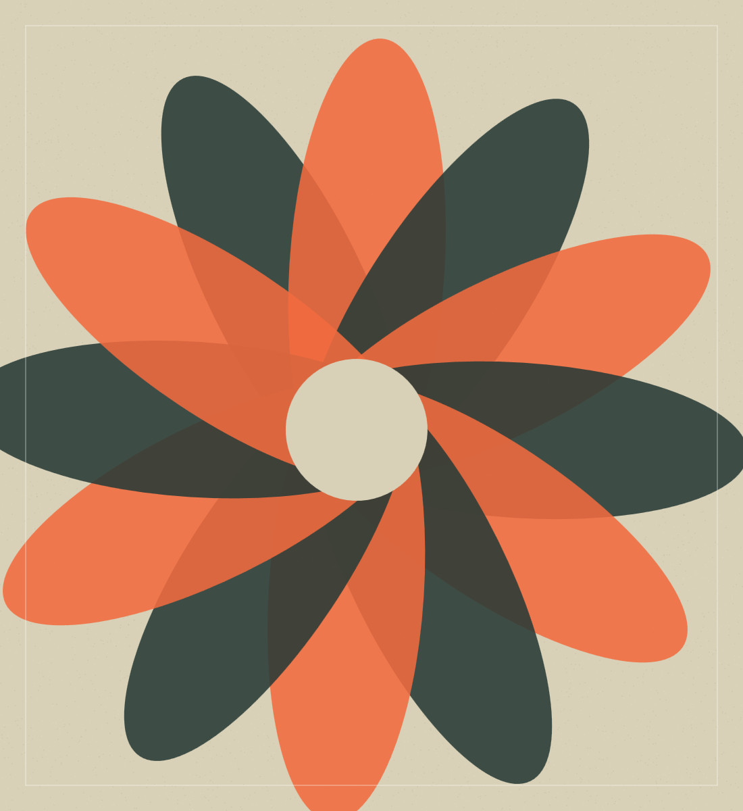
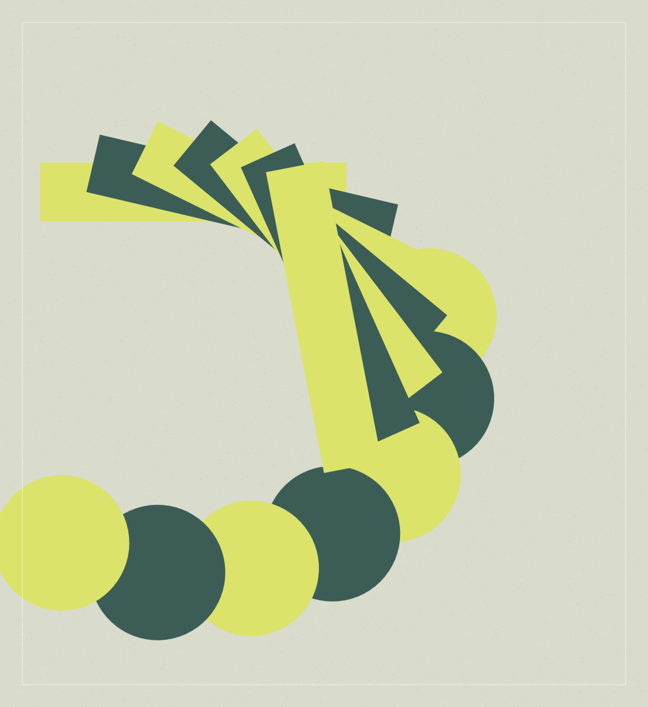
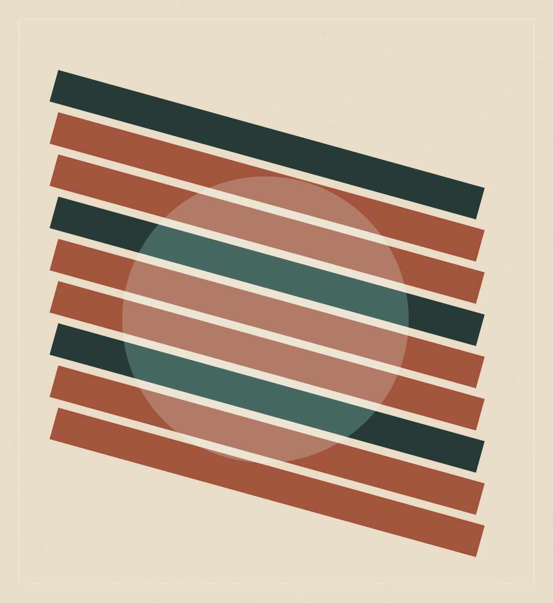
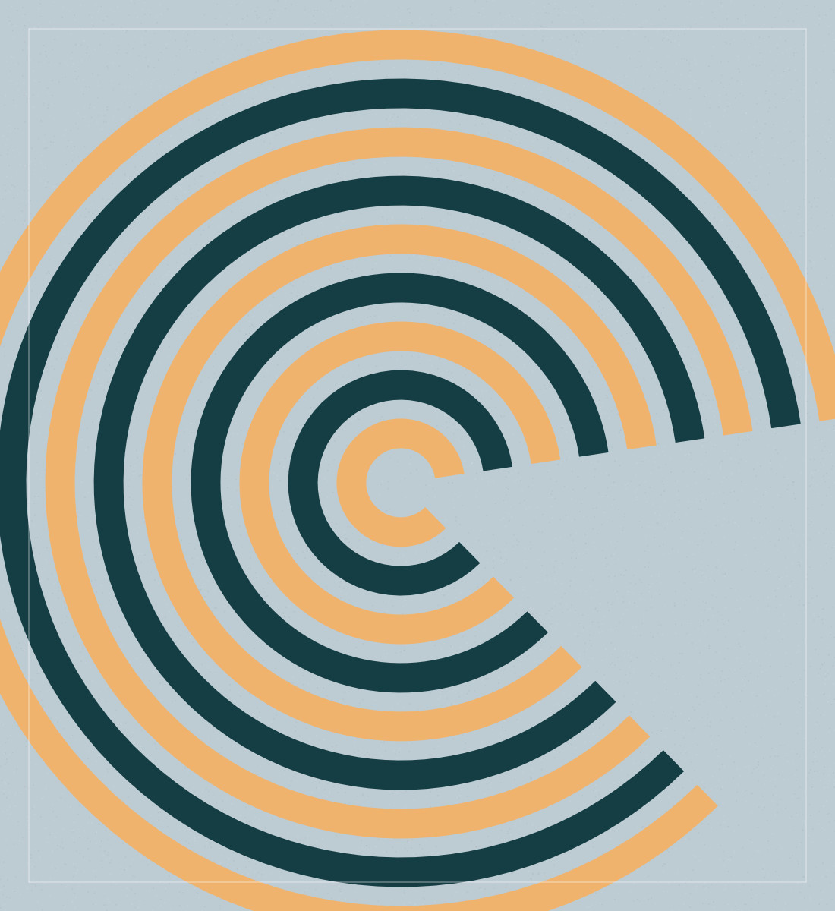
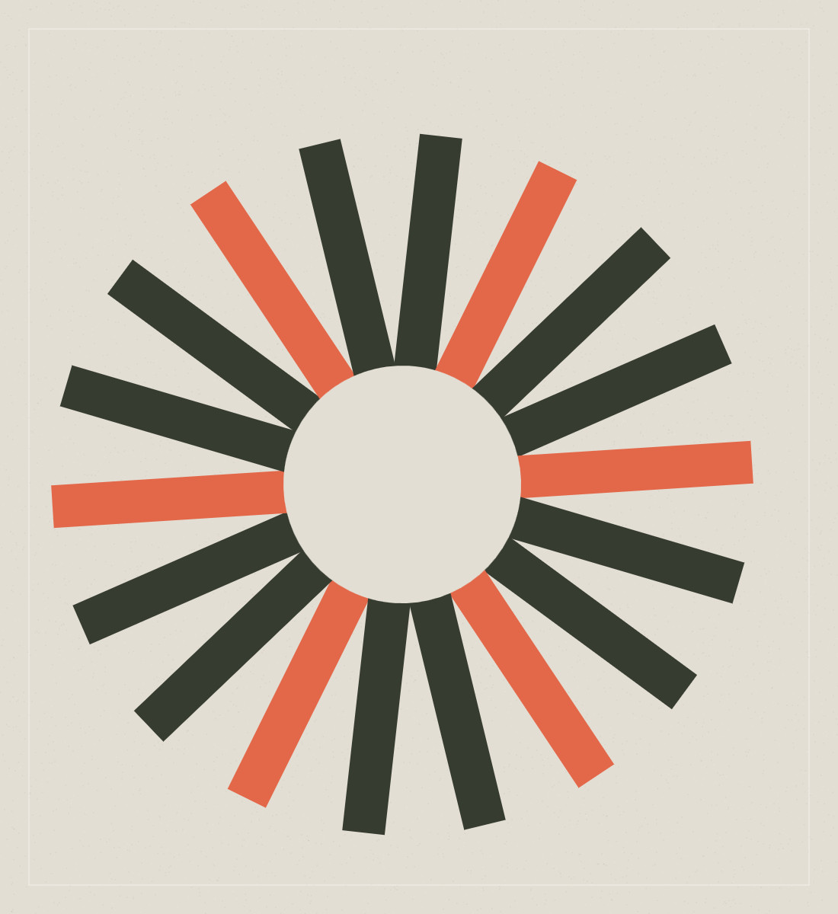

Página 1
01 · Portada animada

UMBRAL / EDICIÓN 01 / 2026
↗
UNA REVISTA QUE ESTÁ VIVA
UM
BRAL
NO SE LEE. SE EXPLORA.
Arte, diseño y nuevas ideas en una experiencia editorial en movimiento.
EL DISEÑO YA NO ES ESTÁTICO.
ENTRAR EN LA REVISTA ↗
DESCUBRE EL MOVIMIENTO +
02 · Sumario
02 / 06
UMBRAL / REVISTA DIGITAL / Nº 01

El contenidotambién es diseño.
Seis escenas. Una forma diferente de leer.
01
El poder de una idea
↗
02
Formas en movimiento
↗
03
El diseño que viene
↗
04
Lo que permanece
↗
TOCA UN CAPÍTULO PARA ENTRAR
03 · El poder de una idea

03 / 06
UMBRAL / REVISTA DIGITAL / Nº 01
TODOEMPIEZACON UNA IDEA.
Una imagen puede ser una pregunta. Una forma, un lenguaje. El diseño transforma lo cotidiano en algo que merece una segunda mirada.
MÁS SOBRE ESTA IDEA +
04 · Formas en movimiento
04 / 06
UMBRAL / REVISTA DIGITAL / Nº 01
Formas en movimiento
Una galería que no se contempla: se explora.


Una nuevamirada.
Experimentar es aceptar que la forma también puede sorprendernos. Avanza por las imágenes, descubre sus variaciones y abre la galería a pantalla completa.
← DESLIZA LA GALERÍA
05 · El diseño que viene
05 / 06
UMBRAL / REVISTA DIGITAL / Nº 01
NO SE TRATA SOLO DE VER.
SE TRATA DE SENTIR.
El futuro de la creatividad no cabe en una página inmóvil.
Imagen, interacción, movimiento y relato.
06 · Contraportada
06 / 06
UMBRAL / REVISTA DIGITAL / Nº 01
LAS IDEASCONTINÚAN.
El final de una publicación puede ser el principio de otra.
VOLVER AL INICIO ↗
COMPARTIR ↗
UMBRAL / HECHO PARA EXPLORAR